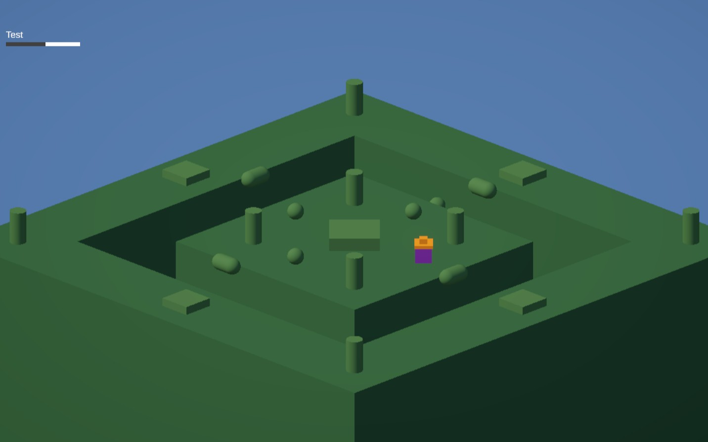

Le Chapeau
Le Chapeau is a small online multiplayer arena game built with Photon PUN 2 where players jump, collide, and try to steal a golden hat from one another. The first player to hold the hat for a full timer wins the round.
The project focuses on core networking concepts in Unity: connecting to a master server, creating and joining rooms, synchronizing player movement, and using remote procedure calls (RPCs) to coordinate gameplay events such as scene changes and hat transfers between players.
Key systems implemented for Le Chapeau:
- Photon PUN 2 networking with lobby, room creation, and room joining.
- Isometric arena with responsive movement, jumping, and collision-based hat stealing.
- “Keep the hat” win condition with a configurable time-to-win and brief invincibility window after pickup.
- RPC-driven scene management so the host can start the match and move all players into the game scene together.
- In-game UI showing player names, hat timers, and a win banner before returning players to the menu.
